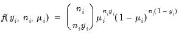
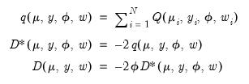
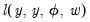
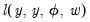
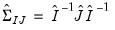
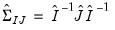

|
|
|
and
are distribution specific functions. , which is termed the canonical parameter, fully parameterizes the distribution in terms of the conditional mean, the dispersion value
is a possibly known scale nuisance parameter, and
is a known prior weight that corrects for unequal scaling between observations with otherwise constant
.


of the exponential family distribution and the linear predictor . The canonical links for relevant distributions are given by:


requires an iterative approach. EViews offers three different algorithms for obtaining solutions: Newton-Raphson, BHHH, and IRLS - Fisher Scoring. All of these methods are variants of Newton’s method but differ in the method for computing the gradient weighting matrix used in coefficient updates (see “Optimization Algorithms”).
IRLS, which stands for Iterated Reweighted Least Squares, is a commonly used algorithm for estimating GLM models. IRLS is equivalent to Fisher Scoring, a Newton-method variant that employs the Fisher Information (negative of the expected Hessian matrix) as the update weighting matrix in place of the negative of the observed Hessian matrix used in standard Newton-Raphson, or the outer-product of the gradients (OPG) used in BHHH.You may choose from a variety of estimators for, the covariance matrix of . In describing the various approaches, it will be useful to have expressions at hand for the expected Hessian (
), the observed Hessian (
), and the outer-product of the gradients (
) for GLM models. Let . Then given estimates of
and the dispersion
(See “Dispersion Estimation”), we may write

may be obtained by taking the inverse of one of these estimators of the information matrix. In practice, one typically matches the covariance matrix estimator with the method of estimation (i.e., using the inverse of the expected information estimator when estimation is performed using IRLS) but mirroring is not required. By default, EViews will pair the estimation and covariance methods, but you are free to mix and match as you see fit.
typically exceeds 1.0 (though underdispersion is a possibility). At a minimum, unaccounted for overdispersion leads to invalid inference, with estimated standard errors of the
typically understating the variability of the coefficient estimates.
The easiest way to correct for overdispersion is by allowing a free dispersion parameter in the variance function, estimatingusing one of the methods described above, and using the estimate when computing the covariance matrix as described in “Coefficient Covariance Estimation”. The resulting covariance matrix yields what are sometimes termed GLM standard errors.
Bear in mind that estimating given a fixed dispersion distribution violates the assumptions of the likelihood so that standard ML theory does not apply. This approach is, however, consistent with a quasi-likelihood estimation framework (Wedderburn 1974), under which the coefficient estimator and covariance calculations are theoretically justified (see “Quasi-likelihoods”). We also caution that overdispersion may be evidence of more serious problems with your specification. You should take care to evaluate the appropriateness of your model.
produces the Pearson
statistic which may be used as an estimator of
, (“Dispersion Estimation”) and, in some cases, as a measure of goodness-of-fit.
EViews always computes GLM log-likelihoods using the full specification of the density function: scale factors, inessential constants, and all. The likelihood functions are listed in “Distribution”.The AIC, SIC, and Hannan-Quinn information criteria are computed using the log-likelihood value and the usual definitions (Appendix E. “Information Criteria”).EViews reports the unscaled devianceor quasi-deviance. The quasi-deviance and quasi-likelihood will be reported if the evaluation of the likelihood function is invalid. You may divide the reported deviance by to obtain an estimator of the dispersion, or use the deviance to construct likelihood ratio or F-tests.
The entries for “LR statistic” and “Prob(LR statistic)” reported in the output are the corresponding likelihood ratio tests for the constant only null against the alternative given by the estimated equation. They are the analogues to the “F-statistics” results reported in EViews least squares estimation. As with the latter F-statistics, the test entries will not be reported if the estimated equation does not contain an intercept.
 are independent random variables following a linear exponential family distribution with density:
are independent random variables following a linear exponential family distribution with density: may be written as
may be written as function, respectively, and
function, respectively, and  is a distribution-specific variance function that depends only on
is a distribution-specific variance function that depends only on  .
.


 trials)
trials)


 .
. The dispersion is restricted to be
The dispersion is restricted to be  and prior weighting is not permitted.
and prior weighting is not permitted. and the prior weights
and the prior weights  .
. and prior weighting is not permitted.
and prior weighting is not permitted.


 )
)
 )
)


 )
) )
)
 )
)
 )
)
 are independent with mean
are independent with mean  and variance , the function,
and variance , the function, . As with conventional GLM likelihoods, the quasi-ML estimate of
. As with conventional GLM likelihoods, the quasi-ML estimate of  does not depend on the value of the dispersion parameter
does not depend on the value of the dispersion parameter  . The dispersion parameter is conventionally estimated using the Pearson
. The dispersion parameter is conventionally estimated using the Pearson  statistic, but if the mean-variance assumption corresponds to a valid exponential family distribution, one may also employ the deviance statistic.
statistic, but if the mean-variance assumption corresponds to a valid exponential family distribution, one may also employ the deviance statistic.


 , exponential mean , and squared binomial proportion
, exponential mean , and squared binomial proportion  variance assumptions do not correspond to exponential family distributions.
variance assumptions do not correspond to exponential family distributions. coefficients, the coefficient covariance matrix
coefficients, the coefficient covariance matrix  , and the dispersion parameter
, and the dispersion parameter  .
. is accomplished using the method of maximum likelihood (ML). Let and
is accomplished using the method of maximum likelihood (ML). Let and  . We may write the log-likelihood function as
. We may write the log-likelihood function as  yields
yields is incidental to the first-order conditions, we may ignore it when estimating
is incidental to the first-order conditions, we may ignore it when estimating  . In practice this is accomplished by evaluating the likelihood function at
. In practice this is accomplished by evaluating the likelihood function at  .
. and the
and the  as
as compares the likelihood function for the saturated (unrestricted) log-likelihood, , with the log-likelihood function evaluated at an arbitrary
compares the likelihood function for the saturated (unrestricted) log-likelihood, , with the log-likelihood function evaluated at an arbitrary  ,
,  .
.  is simply the scaled deviance multiplied by the dispersion, or equivalently, the scaled deviance evaluated at . It is easy to see that minimizing either deviance with respect to
is simply the scaled deviance multiplied by the dispersion, or equivalently, the scaled deviance evaluated at . It is easy to see that minimizing either deviance with respect to  is equivalent to maximizing the log-likelihood with respect to the
is equivalent to maximizing the log-likelihood with respect to the  .
. . The Huber-White Sandwich estimator (Huber 1967, White 1980) permits non GLM-variances and is robust to misspecification of the variance function. EViews offers two forms for the estimator; you may choose between one that employs the expected information () or one that uses the observed Hessian ().
. The Huber-White Sandwich estimator (Huber 1967, White 1980) permits non GLM-variances and is robust to misspecification of the variance function. EViews offers two forms for the estimator; you may choose between one that employs the expected information () or one that uses the observed Hessian (). in the basic calculation, then multiplying the coefficient covariance matrix by when you want to apply the correction.
in the basic calculation, then multiplying the coefficient covariance matrix by when you want to apply the correction. may be ignored when estimating
may be ignored when estimating  . Once we have obtained
. Once we have obtained  , we may turn attention to obtaining an estimate of
, we may turn attention to obtaining an estimate of  . With respect to the estimation of
. With respect to the estimation of  , we may divide the distribution families into two classes: distributions with a free dispersion parameter, and distributions where the dispersion is fixed.
, we may divide the distribution families into two classes: distributions with a free dispersion parameter, and distributions where the dispersion is fixed. . An estimate of the free dispersion parameter
. An estimate of the free dispersion parameter  may be obtained using the generalized Pearson
may be obtained using the generalized Pearson  statistic (Wedderburn 1972, McCullagh 1983),
statistic (Wedderburn 1972, McCullagh 1983), is the number of estimated coefficients. In linear exponential family settings,
is the number of estimated coefficients. In linear exponential family settings,  may also be estimated using the unscaled deviance statistic (McCullagh 1983),
may also be estimated using the unscaled deviance statistic (McCullagh 1983), is naturally set to the theoretically proscribed value of 1.0.
is naturally set to the theoretically proscribed value of 1.0. .
. , the fixed value will be used to compute the likelihood. If the distribution and dispersion specification call for
, the fixed value will be used to compute the likelihood. If the distribution and dispersion specification call for  to be estimated, will be used in the evaluation of the likelihood. If the specified distribution calls for a fixed value for
to be estimated, will be used in the evaluation of the likelihood. If the specified distribution calls for a fixed value for  but you have asked EViews to estimate the dispersion, or if the specified value is not consistent with a valid likelihood, the log-likelihood will not be computed.
but you have asked EViews to estimate the dispersion, or if the specified value is not consistent with a valid likelihood, the log-likelihood will not be computed.